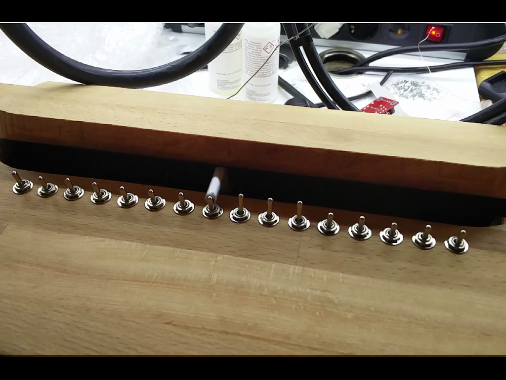

Why?
I chose to make a useless box because i didn't want to be too ambitious.
I chose to make a useless box because i think it's something i can do.
how?
i have to look up most things myself but i can follow manuals on some things.
deadline.
11 february
The deadline has been moved too June 17th due to corona.
wiring
this is what the wiring looks like.
Example Advanced Useless Box
This is what the end result should look like.
Burn down chart

Manual
Step 1. Get the Materials. I ended up using a DC motor from an old printer. An old wooden box i made the lid from a plank. I used hinges to open the lid. I used a breadboard. An arduino uno, 2 servo motors, An l9110 H-Bridge, 6 switches, many male to male cables and some female to male cables are also required. and ofcourse also the arduino ide program you can download for free on your computer and a cable to connect your pc to the arduino.
Step 2. After connecting and the lid at a ratio of 1/3. one third being contantly on the box (this is where the switches will go) the other two thirds will be able to get lifted up by the hinges and the arm.
Step 3. Drill 5 holes with an at an equal distance that will eb big enough to hold your switches.
Step 4. Put in all the cables the correct way. you should be able to tell via this image and the code.

Step 5. After you've connected thecables and put the servo motors for the arm and lid and the home switch in the correct place. you are ready to upload the code.
Code
#include <"Servo.h> // wired connections #define HG7881_B_IA A4 // A4 --> Motor B Input A --> MOTOR B + #define HG7881_B_IB 9 // D9 --> Motor B Input B --> MOTOR B - // functional connections #define MOTOR_B_PWM HG7881_B_IA // Motor B PWM Speed #define MOTOR_B_DIR HG7881_B_IB // Motor B Direction // the actual values for "fast" and "slow" depend on the motor #define PWM_SLOW 50 // arbitrary slow speed PWM duty cycle #define PWM_FAST 200 // arbitrary fast speed PWM duty cycle #define DIR_DELAY 1000 // brief delay for abrupt motor changes // Servo Motor pins #define arm 3 #define lid 2 //motor int MP1 = 9; int MP2 = A4; //switches #define P1 8 #define P2 7 #define P3 6 #define P4 5 #define P5 4 #define Home 12 Servo servoArm; // Arm Servo Servo servoLid; // Lid Servo int Arm_Position = 0; bool opened = false; int m = 0; int s = 0; int motorpositie = 0; void setup() { //motor pinMode(MP1, OUTPUT); pinMode(MP2, OUTPUT); //switches pinMode(P1, INPUT_PULLUP); pinMode(P2, INPUT_PULLUP); pinMode(P3, INPUT_PULLUP); pinMode(P4, INPUT_PULLUP); pinMode(P5, INPUT_PULLUP); //servos Serial.begin(9600); pinMode(arm, OUTPUT); pinMode(lid, OUTPUT); servoArm.attach(arm); servoLid.attach(lid); servoArm.write(0); servoLid.write(75); delay(700); servoArm.detach(); servoLid.detach(); Serial.println("yey"); pinMode(Home, INPUT_PULLUP); while (digitalRead(Home) > LOW) { //return to the initial position digitalWrite( MOTOR_B_DIR, LOW ); // direction = reverse analogWrite( MOTOR_B_PWM, PWM_SLOW ); // PWM speed = slow } digitalWrite( MOTOR_B_DIR, LOW ); digitalWrite( MOTOR_B_PWM, LOW ); m = 0; } //raised the arm void arm_High() { // Raised the Arm servoArm.attach(arm); servoArm.write(140); if (Arm_Position == 0) { delay(400); } else { delay(200); } } void arm_Middle() {//Lower the Arm servoArm.write(75); delay(200); Arm_Position = 1; } void arm_Low() { servoArm.write(0); delay(200); servoArm.detach(); Arm_Position = 0; } //open void openLid() { servoLid.attach(lid); servoLid.write(135); delay(300); opened = true; } //close void closeLid() { servoLid.write(75); delay(300); servoLid.detach(); opened = false; } void loop() { switch(m){ case '1': //right digitalWrite( MOTOR_B_DIR, HIGH ); // direction = forward analogWrite( MOTOR_B_PWM, 255-PWM_SLOW ); // PWM speed = slow delay( DIR_DELAY * s); digitalWrite( MOTOR_B_DIR, LOW ); digitalWrite( MOTOR_B_PWM, LOW ); motorpositie +=s; if (opened = false ){ openLid(); } arm_High(); arm_Middle(); break; case '2': //left digitalWrite( MOTOR_B_DIR, LOW ); // direction = reverse analogWrite( MOTOR_B_PWM, PWM_SLOW ); // PWM speed = slow delay( DIR_DELAY * s ); digitalWrite( MOTOR_B_DIR, LOW ); digitalWrite( MOTOR_B_PWM, LOW ); motorpositie -=s; if (opened = false ){ openLid(); } arm_High(); arm_Middle(); break; default: digitalWrite( MOTOR_B_DIR, LOW ); digitalWrite( MOTOR_B_PWM, LOW ); if (opened = true ){ arm_Low(); closeLid(); } } if (digitalRead (P1) == LOW){ if (motorpositie < 5){ m = 1; s = 5 - motorpositie; }else if(motorpositie > 5){ m = 2; s = motorpositie - 5; } } if (digitalRead (P2) == LOW){ if (motorpositie < 4){ m = 1; s = 4 - motorpositie; }else if(motorpositie > 4){ m = 2; s = motorpositie - 4; } } if (digitalRead (P3) == LOW){ if (motorpositie < 3){ m = 1; s = 3 - motorpositie; }else if(motorpositie > 3){ m = 2; s = motorpositie - 3; } } if (digitalRead (P4) == LOW){ if (motorpositie < 2){ m = 1; s = 2 - motorpositie; }else if(motorpositie > 2){ m = 2; s = motorpositie - 2; } } if (digitalRead (P5) == LOW){ if (motorpositie < 1){ m = 1; s = 1 - motorpositie; }else if(motorpositie > 1){ m = 2; s = motorpositie - 1; } if (digitalRead (P5) == HIGH && digitalRead (P4) == HIGH && digitalRead (P3) == HIGH && digitalRead (P2) == HIGH && digitalRead (P1) == HIGH){ m = 0; } } }
Copyright©Dieter Zenner